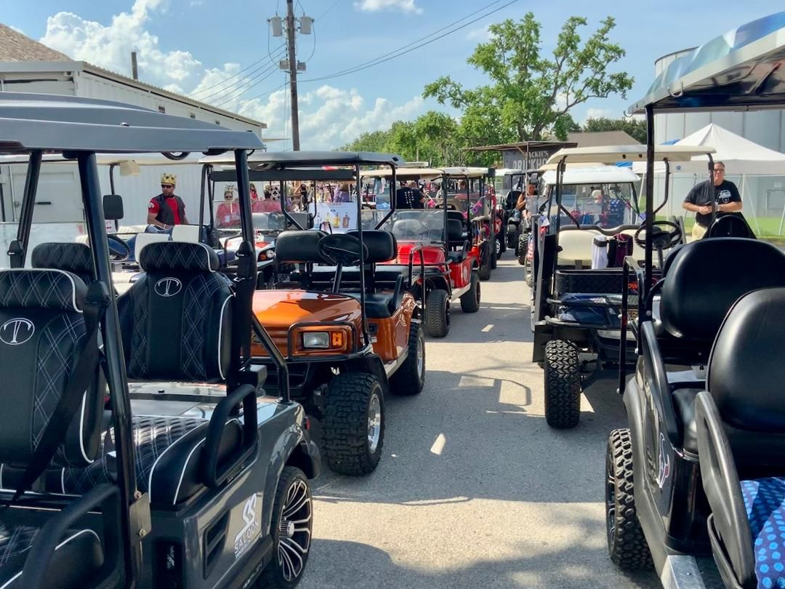

Tomberlin Showroom
Authorized Tomberlin dealer and service center on the Texas Gulf Coast.
Tomberlin Authorized Dealer and Service Center
Golf carts by Tomberlin lead in safety. Safety and security are engineered into every Tomberlin personal transportation vehicle, never offered as an aftermarket add-on or optional upgrade. Every model includes 3-point seatbelts, 4-wheel hydraulic brakes, locking storage and a unique personal key.
Visit our Galveston location at 3538 Broadway, Galveston, TX 77550 or call 409-256-7717. See our other new-cart brands on the New Golf Carts page.

3-point seatbelts
Standard on every Tomberlin, not an add-on.
4-wheel hydraulic brakes
Confident stopping power at every corner.
Locking storage
Keep your belongings secure.
Unique personal key
Your cart starts with your key only.
Current Tomberlin models
Availability, colors and pricing change often. Call for current stock.


Customer Story: Golf Carts of Texas, from Sawblade.tv on Vimeo.